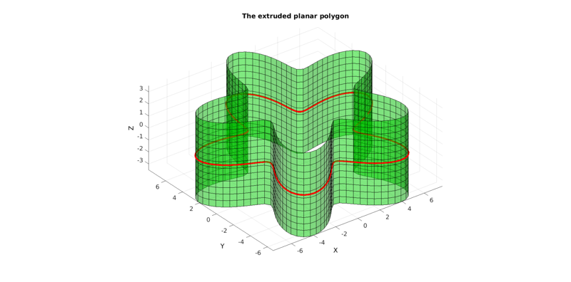
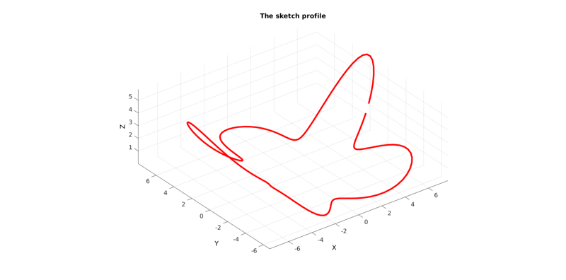

polyExtrude
Below is a demonstration of the features of the polyExtrude function
Contents
Syntax
[F_tri,V_tri]=polyExtrude(Vc,cPar);
Description
The polyExtrude function can be used to extrude polygons to obtain patch data and generate CAD like model geometry.
Examples
clear; close all; clc;
Plot settings
figColor='w'; figColorDef='white'; fontSize=15; markerSize1=45; lineWidth1=4; faceAlpha=0.5;
Example: EXTRUDING A PLANAR POLYGON
%Sketching profile
ns=150;
t=linspace(0,2*pi,ns);
t=t(1:end-1);
r=6+2.*sin(5*t);
[x,y] = pol2cart(t,r);
z=zeros(size(x));
Vc=[x(:) y(:) z(:)];
Plotting sketch
hf1=figuremax(figColor,figColorDef); title('The sketch profile','FontSize',fontSize); xlabel('X','FontSize',fontSize);ylabel('Y','FontSize',fontSize); zlabel('Z','FontSize',fontSize); hold on; plotV(Vc,'r-','lineWidth',lineWidth1,'MarkerSize',markerSize1); axis equal; view(3); axis tight; grid on; set(gca,'FontSize',fontSize); drawnow;

% Extruding model cPar.pointSpacing=0.5; cPar.depth=7; cPar.patchType='quad'; cPar.dir=0; cPar.closeLoopOpt=1; [F,V]=polyExtrude(Vc,cPar);
Plotting meshed model
hf2=figuremax(figColor,figColorDef); title('The extruded planar polygon','FontSize',fontSize); xlabel('X','FontSize',fontSize);ylabel('Y','FontSize',fontSize); zlabel('Z','FontSize',fontSize); hold on; hp=patch('faces',F,'Vertices',V); set(hp,'FaceColor','g','EdgeColor','k','FaceAlpha',faceAlpha); % patchNormPlot(F_tri,V_tri); plotV(Vc,'r-','lineWidth',lineWidth1,'MarkerSize',markerSize1); axis equal; view(3); axis tight; grid on; set(gca,'FontSize',fontSize); camlight headlight; drawnow;
Example: EXTRUDING A TILTED PLANAR POLYGON
%Create rotation matrix E=[0.25*pi 0 0]; %Euler angles [R,~]=euler2DCM(E); %The rotation matrix Vc=(R*Vc')'; %Rotate polygon
Plotting sketch
hf1=figuremax(figColor,figColorDef); title('The sketch profile','FontSize',fontSize); xlabel('X','FontSize',fontSize);ylabel('Y','FontSize',fontSize); zlabel('Z','FontSize',fontSize); hold on; plotV(Vc,'r-','lineWidth',lineWidth1,'MarkerSize',markerSize1); axis equal; view(3); axis tight; grid on; set(gca,'FontSize',fontSize); drawnow;

% Extruding model cPar.pointSpacing=0.5; cPar.depth=7; cPar.patchType='tri_slash'; cPar.dir=0; cPar.closeLoopOpt=1; [F,V]=polyExtrude(Vc,cPar);
Plotting meshed model
hf2=figuremax(figColor,figColorDef); title('The extruded planar polygon normal to polygon','FontSize',fontSize); xlabel('X','FontSize',fontSize);ylabel('Y','FontSize',fontSize); zlabel('Z','FontSize',fontSize); hold on; hp=patch('faces',F,'Vertices',V); set(hp,'FaceColor','g','EdgeColor','k','FaceAlpha',faceAlpha); plotV(Vc,'r-','lineWidth',lineWidth1,'MarkerSize',markerSize1); axis equal; view(3); axis tight; grid on; set(gca,'FontSize',fontSize); camlight headlight; drawnow;

Alternative extrusion direction direction
% Extruding model cPar.pointSpacing=0.5; cPar.depth=7; cPar.patchType='tri'; cPar.dir=0; cPar.n=[0 0 1]; cPar.closeLoopOpt=1; [F,V]=polyExtrude(Vc,cPar);
Plotting meshed model
hf2=figuremax(figColor,figColorDef); title('The extruded planar polygon in z-dir','FontSize',fontSize); xlabel('X','FontSize',fontSize);ylabel('Y','FontSize',fontSize); zlabel('Z','FontSize',fontSize); hold on; hp=patch('faces',F,'Vertices',V); set(hp,'FaceColor','g','EdgeColor','k','FaceAlpha',faceAlpha); plotV(Vc,'r-','lineWidth',lineWidth1,'MarkerSize',markerSize1); axis equal; view(3); axis tight; grid on; set(gca,'FontSize',fontSize); camlight headlight; drawnow;

Example: EXTRUDING A NON-PLANAR POLYGON
%Sketching profile
ns=150;
t=linspace(0,2*pi,ns);
t=t(1:end-1);
r=6+2.*sin(5*t);
[x,y] = pol2cart(t,r);
z=1/10*x.^2;
Vc=[x(:) y(:) z(:)];
Plotting sketch
hf1=figuremax(figColor,figColorDef); title('The sketch profile','FontSize',fontSize); xlabel('X','FontSize',fontSize);ylabel('Y','FontSize',fontSize); zlabel('Z','FontSize',fontSize); hold on; plotV(Vc,'r-','lineWidth',lineWidth1,'MarkerSize',markerSize1); axis equal; view(3); axis tight; grid on; set(gca,'FontSize',fontSize); drawnow;
% Extruding model cPar.pointSpacing=0.5; cPar.depth=7; cPar.patchType='tri'; cPar.dir=0; cPar.closeLoopOpt=1; [F,V]=polyExtrude(Vc,cPar);
Plotting meshed model
hf2=figuremax(figColor,figColorDef); title('The extruded non-planar polygon normal to polygon','FontSize',fontSize); xlabel('X','FontSize',fontSize);ylabel('Y','FontSize',fontSize); zlabel('Z','FontSize',fontSize); hold on; hp=patch('faces',F,'Vertices',V); set(hp,'FaceColor','g','EdgeColor','k','FaceAlpha',faceAlpha); plotV(Vc,'r-','lineWidth',lineWidth1,'MarkerSize',markerSize1); axis equal; view(3); axis tight; grid on; set(gca,'FontSize',fontSize); camlight headlight; drawnow;


GIBBON www.gibboncode.org
Kevin Mattheus Moerman, gibbon.toolbox@gmail.com